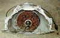

The TH350 is a strong 3 speed automatic transmission. One of the advantages of the TH350 is it is very short for a strong automatic. It is about the only automatic transmission that will fit in a CJ-5 or shorter Jeep since the case itself with no adapter only measures 21 3/4". If wheel base is not such an issue, the TH400 is significantly strong, but it does waste more power. The 700R4 is about the same length as the TH400 and it has an overdrive.
The Turbo 350 has been used in many GM cars and some Chevy Blazers. The pan is secured with 13 bolts.
Newer TH350s use a lock-up torque converter. The advantage of the lock-up is it is more efficient on the highway. When you are in third gear and the RPMs get to a certain level, the distributor triggers the torque converter. This makes the transmission work at a straight 1:1 with no lost power from torque converter slippage. These transmissions are considered to have 3 1/2 gears because of the lock-up.
The down side to the lock-up is the torque converter is not any larger than the non-lock-up version. The clutches take up a lot of space in the converter and so the converter tends to generate more heat. My transmission guy strongly recommended I get a non-lock-up version of the transmission because they last much longer.
The lock up version can be easily identified by the plug it has on the drivers side. It is normally a four prong weather pack plugs, not all the wires are used from what I've seen. The version that does not have a lock up torque converter doesn't have any wires to it at all.
It might be best to use the lock up version of the transmission if your engine originally used a lock up transmission. A different distributor is used with the lock up transmissions and the engine may be tuned for use with the transmission.
Another variation on the Turbo 350 is the clutch packs. Turbo 350s used with V8 engines use much larger clutch packs than the versions used with six cylinder engines. Since four wheeling tends to be very hard on transmissions, it is a good idea to get the V8 version with the big clutch packs.
There are several variations on tailshafts. There are long and
short tail shafts and the Chevy version uses a different opening
for the speedometer output. This won't matter for your Jeep
though, because the Advanced Adapters kit replaces the tailshaft.
The case on the left has a recently replaced Chevy short tail
shaft on it.
It is best to get a 4WD version of the Turbo 350 because it will save you some money on the adapter. If you get the 2WD version you will have to pay a couple extra bucks for the right output shaft. The Turbo 350 was used in some full size Blazers and similar trucks. Sometimes people get dual pattern cases built for these trucks so they can drop in Caddy engines.
 The Turbo 350 case commonly comes with three different bolt patterns. Some cases have a Chevy engine bolt pattern, some cases have the Buick, Olds, Pontiac, and Caddy bolt pattern, and some have both. It is well worth getting the dual pattern, or unicase, Turbo 350. If you ever think you might do an engine swap, you won't have to worry about the transmission. It will also help the resale of the transmission because it will work with more engine combinations.
The Buick, Olds, Pontiac, and Caddy engine bolt pattern is easily identified by the valley at the top and the Chevy pattern is peaked on the top. The dual pattern transmission in the picture on the right has both patterns. You can see the valley and peak. Each set of bolts around the top is in a pair. The alignment pin and the lower bolt is the same.
| Transmission | 1st | 2nd | 3rd | 4th | 5th | Rev |
|---|---|---|---|---|---|---|
| TH350 | 2.52 | 1.52 | 1.00 | NA |
{kind=link}